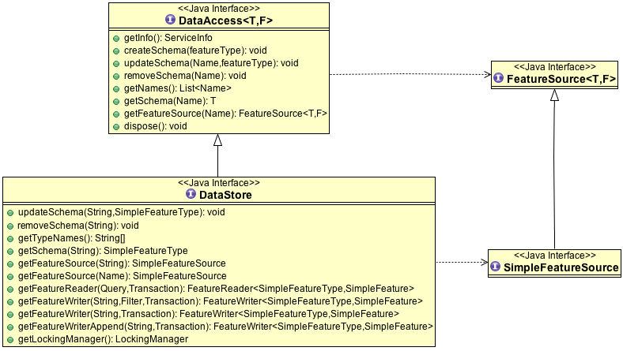
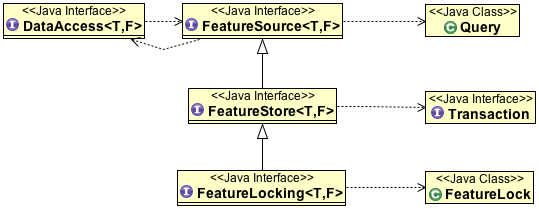
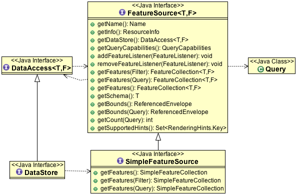
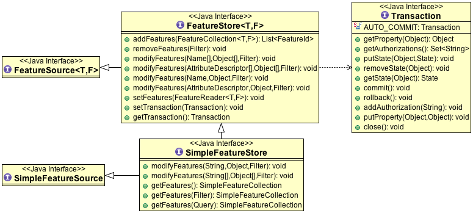
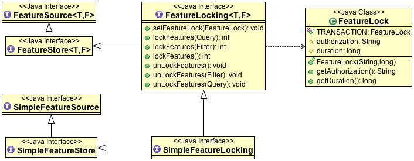

DataStore¶
The core data access model for vector information in GeoTools is built around the DataStore class.
Here is a quick example of accessing a shapefile:
File file = new File("example.shp");
Map map = new HashMap();
map.put( "url", file.toURL() );
DataStore dataStore = DataStoreFinder.getDataStore(map );
References:
- gt-data DataStore Code Examples
- javadoc: DataStore
- javadoc: FeatureSource
- javadoc: SimpleFeatureSource
DataAccess¶
DataAccess represents a storage location or service for spatial data.
The DataAccess<T,F> defined as:
T: FeatureType - class used to describe content.
Currently FeatureType and SimpleFeatureType are available)
F: Feature - class used to represent content.
Currently Feature and SimpleFeature area available.
DataStore is a short hand for DataAccess<SimpleFeatureType,SimpleFeature> with a few extra methods allowing the contents to be accessed using a type name defined as a simple String
You can use the DataAccess interface to get a list of the contents, retrieve a little bit of information about the contents (such as their name, bounds and description). To actually retrieve the data contents you will ask the DataAccess interface for a FeatureSource based on the content Name (using the Name) of the features that you want. We will discuss FeatureSource in the next section.
Here are two examples of these ideas in action:
- ShapeFileDataStore represents the file on disk, FeatureSource represents the contents of the file
- PostGISDataStore represents the database, while a FeatureSource represents a table in the database
The key differences is between a the file and the contents of the file. If you find it easier you can think of it as the difference between:
- DataStore: the information contained in the file header (name, bounds, description) that describe the entire contents
- FeatureSource: the information contained in the file itself (lots of little features)
Here is a quick review of the DataAccess methods:
DataAccess.getInfo()
Access a quick description of the service or file publishing information.:
ServiceInfo info = dataStore.getInfo(); // Human readable name and description String title = info.getTitle(); String text = info.getDescription(); // keywords (dublin core keywords like a web page) Set<String> keywords = info.getKeywords(); // formal metadata URI publisher = info.getPublisher(); // authority publishing data URI schema = info.getSchema(); // used for data conforming to a standard URI source = info.getSource(); // location where information is published from
Some DataStores, like Web Feature Server, may provide additional information in the object they return from getInfo().
DataAccess.createSchema(FeatureType)
Used to define the contents of a shapefile, or add a new table to database. Not supported by all DataStores.
SimpleFeatureType schema = DataUtilities.createType("LINE", "centerline:LineString,name:\"\",id:0"); dataStore.createSchema( schema );
DataAccess.updateSchema(Name, FeatureType)
Used to modify the contents of a shapefile, or alter an existing table. Not supported by all dataStores.
DataAccess.removeSchema(Name)
Used to remove an existing table. Not supported by all dataStores.
Name schemaName = new NameImpl("myTable"); dataStore.removeSchema(schemaName);
DataAccess.getNames()
DataAccess.getSchema(Name)
DataAccess.getFeatureSource(Name): FeatureSource<FeatureType,Feature>
DataAccess.dispose()
Used to clean up any internal connections or memory used by the DataStore. Should be called prior to your application exiting.:
if( dataStore != null ){ dataStore.dispose(); dataStore = null; }
DataStore¶
The DataStore interface is a DataAccess subclass that provides to explicitly work with content providers that only know how to deal with SimpleFeature and SimpleFeatureType.
DataStore.updateSchema(String, SimpleFeatureType)
DataStore.removeSchema(String)
DataStore.getTypeNames()
Access an String[] of Name.getLocalName()
DataStore.getSchema(String)
Access to SimpleFeatureType based on name.
DataStore.getFeatureSource(String)
DataStore.getFeatureSource(Name)
You can access SimpleFeatureSource based on a type name supplied as a Name or a String.
DataStore.getFeatureReader(Query, Transaction)
DataStore.getFeatureWriter(String, Filter, Transaction)
DataStore.getFeatureWriter(String, Transaction)
DataStore.getFeatureWriterAppend(String, Transaction)
Access to a low-level FeatureReader and FeatureWriter classe allowing direct access to DataStore contents (complete with IO Exceptions).
The various FeatureWriter methods require a Transaction (ie session) to perform their work on, and allow existing content to be updated or new content to be appended.
DataStore.getLockingManager()
Access to the LockingManager used to sort out any time based locks acquired on to restrict access when multiple threads are working on the same information.
FeatureSource¶
A FeatureSource is used to provide access to the contents of a DataStore.
Approach
As you can see FeatureSource provides different subclasses depending on the level of access available. So a read-only file will be an instanceof FeatureSource while a writable file will be able to return a FeatureStore.
To check if the contents of a file are writable you can use an instanceof check:
SimpleFeatureSource featureSource = dataStore.getFeatureSource( "roads" );
if( featureSource instanceof SimpleFeatureStore ){
SimpleFeatureStore featureStore = (SimpleFeatureStore) featureSource;
Transaction session = new DefaultTransaction("Adding");
featureStore.setTransaction( session );
try {
List<FeatureId> added = featureSource.addFeatures( featureCollection );
System.out.println( "Added "+added );
session.commit();
}
catch (Throwable t){
System.out.println( "Failed to add features: "+t );
session.rollback();
}
This approach is nice in that you cannot accidentally modify a read-only file (as your would get a ClassCastException):
// ClassCastException if "roads" is not writable!
SimpleFeatureStore featureStore = (SimpleFeatureStore) dataStore.getFeatureSource( "roads" );
store.addFeatures( newFeatures );
In a similar fashion you can check if locking is supported between threads:
if( featureStore instanceof SimpleFeatureLocking ){
// locking supported
}
SimpleFeatureSource¶
SimpleFeatueSource is the extension of FeatureSource returned by DataStore to explicitly work with SimpleFeature and SimpleFeatureCollection.
Access to basic name and schema information:
- FeatureSource.getName()
- FeatureSource.getSchema()
- FeatureSource.getDataStore()
Access to contents:
FeatureSource.getFeatures()
FeatureSource.getFeatures(Filter)
FeatureSource.getFeatures(Query)
SimpleFeatureSource.getFeatures()
SimpleFeatureSource.getFeatures( Filter )
SimpleFeatureSource.getFeatures( Query )
In the case of SimpleFeatureSource these methods will return a SimpleFeatureCollection.
Access to metadata describing the contents and capabilities available.
- FeatureSource.getInfo()
- FeatureSource.getSupportedHints()
- FeatureSource.getQueryCapabilities()
You can listen to changes made to the contents:
- FeatureSource.addFeatureListener(FeatureListener)
- FeatureSource.removeFeatureListener(FeatureListener)
Summary information:
FeatureSource.getBounds()
FeatureSource.getBounds(Query)
May return null if the bounds are unknown or too costly to calculate.
FeatureSource.getCount(Query)
May return -1 if the information is not readily avaialble. Formats such as shapefile keep this information avaialble in the header for handy reference. WFS does not provide any way to ask for this information and thus always returns -1.
Where a request is captured by a Query:
Query
Used to stage a request for information, identifying a set of features using a filter, the attributes requested along with any additional hints for processing.
There are two predefined Querys available:
- Query.ALL - to request all content
- Query.FIDS - To request only the feature IDs with no content
The typeName information must match your featureSource (and explicitly required when sending a Query directly to a DataStore).
- Query.getTypeName()
- Query.setTypeName(String)
Namespace can be overridden.
Query.getNamespace()
Query.setNamespace(URI)
Override to request a specific namespace, or use Query.NON_NAMESPACE.
Simple string “handle” to identify this query in any logs or error messages.
- Query.getHandle()
- Query.setHandle(String)
Paging support is available using a start and max features as part of your Query.
- Query.getMaxFeatures()
- Query.isMaxFeaturesUnlimited()
- Query.setMaxFeatures(int)
- Query.getStartIndex()
- Query.setStartIndex(Integer)
Specify the set of requested attributes to return:
- Query.getPropertyNames()
- Query.setPropertyNames(String[])
- Query.setPropertyNames(List<String>)
- Query.retrieveAllProperties()
There are a couple well defined constants:
* Query.NO_NAMES * Query.ALL_NAMES
The same options are available using PropertyName in order to support XPath expressions with namespace information.
Query.getProperties()
Query.setProperties(List<PropertyName>)
There are a couple of well defined constants:
- Query.NO_PROPERTIES
- Query.ALL_PROPERTIES
Query.getFilter()
Query.setFilter(Filter)
When working with versioned data you ask for a specific version.
- Query.getVersion()
- Query.setVersion(String)
Override this value in the event the datasource is incorrect and your user knows the correct CoordianteReferenceSystem.
- Query.getCoordinateSystem()
- Query.setCoordinateSystem(CoordinateReferenceSystem)
Used to transform the information to requested CoordinateReferenceSystem.
- Query.getCoordinateSystemReproject()
- Query.setCoordinateSystemReproject(CoordinateReferenceSystem)
Ask for the results to be sorted as indicated
- Query.getSortBy()
- Query.setSortBy(SortBy[])
Open ended hints (check getSupportedHints for details)
Query.getHints()
Query.setHints(Hints)
Example:
query.setHints( new Hints( Query.INCLUDE_MANDITORY_PROPS, Boolean.TRUE ) );
Examples:
How to count the number of features.
Because the getCount method just checks the file or database header information it is designed to be very fast. Not all implementations have access to this information making it a bit tricky to count the number of avaialble features.
The following code shows how to quickly count all the feautres available:
int count = featureSource.getCount( Query.ALL ); if( count == -1 ){ count = featureSource.getFeatures().size(); }
You can modify this to use your own Query:
Query query = new Query( "typeName", CQL.toFilter("REGION = 3") ); int count = featureSource.getCount( query ); if( count == -1 ){ count = featureSource.getFeatures( query ).size(); }
SimpleFeatureStore¶
SimpleFeatureStore is an extension to FeatureStore returning SimpleFeatureCollection as expected and allowing the contents to be modified using a simple String to indicate attribute.
Ability to add and remove features:
- FeatureStore.addFeatures(FeatureCollection<T, F>)
- FeatureStore.removeFeatures(Filter)
Ability to modify feature attributes in place using a Filter to select the content to modify:
FeatureStore.modifyFeatures(Name[], Object[], Filter)
FeatureStore.modifyFeatures(AttributeDescriptor[], Object[], Filter)
FeatureStore.modifyFeatures(Name, Object, Filter)
FeatureStore.modifyFeatures(AttributeDescriptor, Object, Filter)
SimpleFeatureStore.modifyFeatures(String, Object, Filter)
SimpleFeatureStore.modifyFeatures(String[], Object[], Filter)
SimpleFeatureStore allows attribute information to be represented as a simple String.
Transaction control:
- FeatureStore.setTransaction(Transaction)
- FeatureStore.getTransaction()
Reset the entire contents of the FeatureStore:
- FeatureStore.setFeatures(FeatureReader<T, F>)
Session information is captured using a Transaction:
Transaction
Used to control the current editing process and close the transaction when it is completed.
- Transaction.commit()
- Transaction.rollback()
- Transaction.close()
Transaction properties used to hold values for the duration of a transaction.
- Transaction.putProperty(Object, Object)
- Transaction.getProperty(Object)
Authorisations acquired using a FeatureLock request * Transaction.addAuthorization(String) * Transaction.getAuthorizations()
There is also a placeholder Transaction.AUTO_COMMIT available to configure a FeatureStore to write out each change as it occurs.
For internal use Transaction also holds session information for commit and rollback.
- Transaction.putState(Object, State)
- Transaction.removeState(Object)
- Transaction.getState(Object)
SimpleFeatureLocking¶
FeatureLocking adds a couple of methods to support the idea of time based locking. Each lock request is made for a specific duration, if attempt to modify the locked features requires an authorisation code. Any modifications made without the authorisation code will result in an error. Authorisation codes can be configured per transaction (and may in fact apply to more than one DataStore).
Here are the methods for FeatureLocking:
FeatureLocking.setFeatureLock(FeatureLock)
Set the FeatureLock being requested.
FeatureLocking.lockFeatures(Query)
FeatureLocking.lockFeatures(Filter)
FeatureLocking.lockFeatures()
Lock all features, or limit the features being locked with a filter or query.
FeatureLocking.unLockFeatures()
FeatureLocking.unLockFeatures(Filter)
FeatureLocking.unLockFeatures(Query)
Called to release features.
Session information for FeatureLocking is captured with a FeatureLock. This represents the request being made with each call to lockFeatures.
FeatureLock
Used to configure a FeatureLocking to request that features be locked for a set duration of time.
- FeatureLock.getDuration()
Resulting in a set of authorisation Strings. These strings can be used to configure a Transaction allowing locked features to be operated on.
- FeatureLock.getAuthorization()
DataAccecssFactorySpi¶
To create a DataStore GeoTools uses a plugin system based around the DataStoreFactorySpi class.
For most purposes this class is an internal details, however if you want to look at all the supported formats on the CLASSPATH you can ask DataStoreFinder for the complete list.:
for( Iterator i=DataStoreFinder.getAvailableDataStores(); i.hasNext(); ){
DataStoreFactorySpi factory = (DataStoreFactorySpi) i.next();
System.out.println( factory.getDisplayName() );
}
DataAccessFactory.createDataStore(Map<String, Serializable>)
DataStoreFactorySpi.createDataStore(Map<String, Serializable>)
Used to create a DataStore using the provided map of connection parameters. Please note this is used to connect to an existing source of information such as an existing shapefile or an existing web feature server.
DataStoreFactorySpi.createNewDataStore(Map<String, Serializable>)
Used to create a new storage location (example a new shapefile).
DataAccessFactory.getDisplayName()
DataAccessFactory.getDescription()
Human readable name and description.
DataAccessFactory.getParametersInfo()
Description of connection parameters.
DataAccessFactory.canProcess(Map<String, Serializable>)
Used to check the required connection parameters and confirm they can be processed into a DataStore. Note the DataStore may still not work (if for example the username and password were incorrect).
This method confirms the required information is available.
DataAccessFactory.isAvailable()
Some formats require additional jars to be available on the CLASSPATH. As an example database formats often require a JDBC driver to be present.
This method will perform a check and confirm that the needed dependencies are available providing a smooth way for the DataAcccessFactory to report if it is unable to connect.